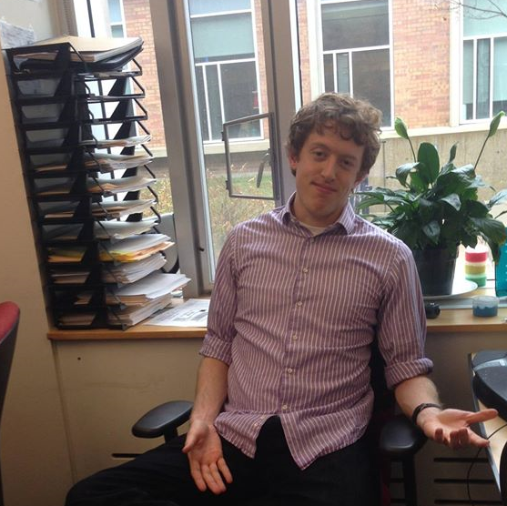

|  | Ian FoxBeyster 3861 |
I am a fifth-year Ph.D. student in Computer Science and Engineering at the University of Michigan, working in the MLD3 lab under Jenna Wiens. I do Machine Learning for Healthcare, and am particularly interested in representation learning for sequential data and using sequential data and reinforcement learning in healthcare. I'm currently using reinforcement learning techniques to learn control algorithms for an artificial pancreas.
I received my Bachelors degree from the University of Massachusetts, Amherst, where I worked with Matthew Dobson.
I plan to receive my PhD in the Summer of 2020, and am looking for industry jobs.
Advocacy Learning: Learning through Competition and Class-Conditional Representations. IJCAI 2019
Deep Multi-Output Forecasting: Learning to Accurately Predict Blood Glucose Trajectories. KDD 2018
The Advantage of Doubling: A Deep Reinforcement Learning Approach to Studying the Double Team in the NBA. MIT Sloan Sports Analytics Conference 2018.
Contextual Motifs: Increasing the Utility of Motifs using Contextual Data. Oral presentation at KDD 2017.
Cell list algorithms for nonequilibrium molecular dynamics. Journal of Computational Physics 2016.